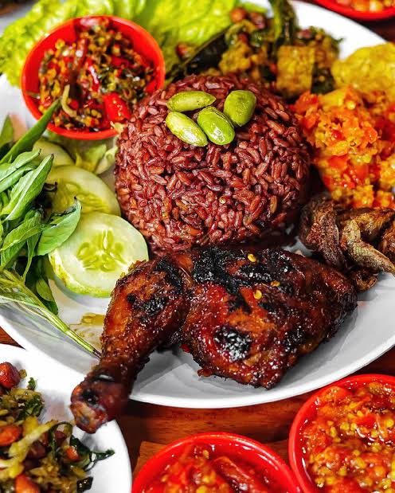

Nasi Merah dengan Ayam Panggang Bumbu Jeruk dan Tumis Sayuran
Bahan:
- 1 cangkir beras merah
- 1 dada ayam tanpa kulit
- 1 buah jeruk nipis
- 2 siung bawang putih, cincang
- 1 sdm minyak zaitun
- Berbagai macam sayuran (wortel, brokoli, buncis)
- Bawang bombay
- Bawang putih
- Garam dan merica secukupnya
Cara Membuat:
- Cuci beras merah, masak seperti biasa.
- Lumuri dada ayam dengan perasan jeruk nipis, bawang putih cincang, dan minyak zaitun. Panggang hingga matang.
- Tumis bawang bombay dan bawang putih hingga harum, masukkan sayuran. Tumis hingga layu, bumbui dengan garam dan merica.
- Sajikan nasi merah dengan ayam panggang dan tumis sayuran.